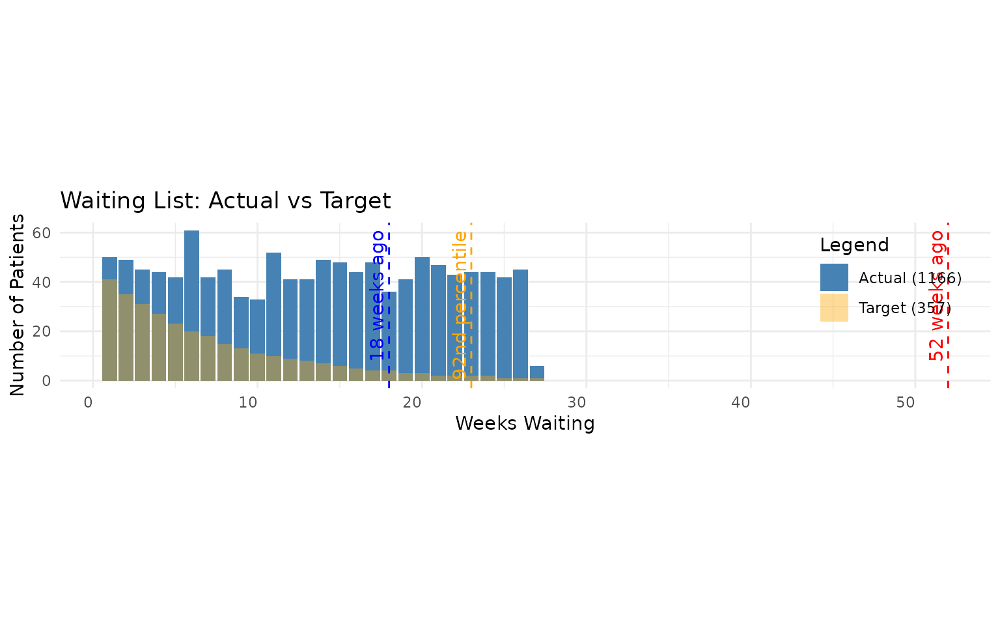

Walkthrough of Histogram Waiting List Functions
Source:vignettes/histogram_walkthrough.Rmd
histogram_walkthrough.RmdThis vignette is a worked example of the histogram workflow in {NHSRwaitinglist}. It follows the same style as the other package walkthroughs: start from simulated data, then work through each function and interpret the outputs.
The walkthrough covers all histogram functions and helpers:
format_histogram()aggregate_histogram()sim_exponential_histogram()wl_queue_size_hist()wl_referral_stats_hist()wl_removal_stats_hist()wl_mean_wait_age_hist()wl_percentile_hist()wl_stats_hist()vis_plot_hist()wl_join_hist()wl_insert_hist()
Why histogram data?
Histogram data is often what we have available in operational practice: counts in waiting-time bands, rather than one row per patient. This is especially useful when patient-level data is unavailable, too large, or must remain anonymised.
In this vignette we use weekly bins, then show how to estimate queue size, demand, capacity, waiting times, and pressure from those bins.
1. Build a deterministic simulated waiting list
We start with simulated patient-level data, then convert snapshots into histogram bins.
waiting_list <- wl_simulator(
start_date = "2023-01-01",
end_date = "2024-06-30",
demand = 45,
capacity = 30,
detailed_sim = FALSE
)
# Add a deterministic category so we can demonstrate aggregation later
waiting_list <- waiting_list |>
mutate(
specialty = if_else(as.integer(Referral) %% 2 == 0, "Cardiology", "Orthopedics")
)
head(waiting_list)
#> Referral Removal specialty
#> 1 2023-01-01 2023-01-02 Cardiology
#> 2 2023-01-01 2023-01-02 Cardiology
#> 3 2023-01-01 2023-01-02 Cardiology
#> 4 2023-01-01 2023-01-02 Cardiology
#> 5 2023-01-02 2023-01-03 Orthopedics
#> 6 2023-01-02 2023-01-03 OrthopedicsNow define a helper to convert a snapshot date into a histogram with stable weekly referral cohorts.
make_hist_weekly <- function(wl, snapshot_date) {
snapshot_date <- as.Date(snapshot_date)
waiting_at_snapshot <- wl |>
filter(
Referral <= snapshot_date,
is.na(Removal) | Removal > snapshot_date
)
# Keep referral cohorts fixed to calendar weeks (Mon-Sun)
waiting_binned <- waiting_at_snapshot |>
mutate(
arrival_since = Referral - (as.integer(strftime(Referral, "%u")) - 1),
arrival_before = arrival_since + 6
) |>
group_by(specialty, arrival_since, arrival_before) |>
summarise(n = n(), .groups = "drop") |>
mutate(report_date = snapshot_date)
waiting_binned
}Create weekly snapshots so we can estimate both demand and removals from histogram data.
report_dates <- seq(as.Date("2024-03-31"), as.Date("2024-05-26"), by = "1 week")
hist_three_snapshots <- bind_rows(lapply(report_dates, function(d) {
make_hist_weekly(waiting_list, d)
}))
unique(hist_three_snapshots$report_date)
#> [1] "2024-03-31" "2024-04-07" "2024-04-14" "2024-04-21" "2024-04-28"
#> [6] "2024-05-05" "2024-05-12" "2024-05-19" "2024-05-26"2. Prepare histogram structure
format_histogram() standardises date columns and
ordering.
# Keep specialty while formatting each snapshot
first_report_date <- min(hist_three_snapshots$report_date)
hist_first <- hist_three_snapshots |>
filter(report_date == first_report_date)
hist_mar_fmt <- format_histogram(
hist_first,
group_columns = "specialty",
end_date = "2024-04-01"
)
head(hist_mar_fmt)
#> arrival_since arrival_before specialty n report_date
#> 1 2024-03-25 2024-03-31 Cardiology 16 2024-03-31
#> 2 2024-03-18 2024-03-24 Cardiology 18 2024-03-31
#> 3 2024-03-11 2024-03-17 Cardiology 23 2024-03-31
#> 4 2024-03-04 2024-03-10 Cardiology 16 2024-03-31
#> 5 2024-02-26 2024-03-03 Cardiology 18 2024-03-31
#> 6 2024-02-19 2024-02-25 Cardiology 26 2024-03-31aggregate_histogram() removes categorical splits (unless
requested) and sums counts.
# Collapse specialties into one total queue
hist_mar_total <- aggregate_histogram(hist_mar_fmt)
head(hist_mar_total)
#> # A tibble: 6 × 3
#> arrival_since arrival_before n
#> <date> <date> <int>
#> 1 2023-10-16 2023-10-22 12
#> 2 2023-10-23 2023-10-29 56
#> 3 2023-10-30 2023-11-05 38
#> 4 2023-11-06 2023-11-12 45
#> 5 2023-11-13 2023-11-19 51
#> 6 2023-11-20 2023-11-26 44We can also keep categories while aggregating.
hist_mar_by_specialty <- aggregate_histogram(
hist_mar_fmt,
group_columns = "specialty"
)
head(hist_mar_by_specialty)
#> # A tibble: 6 × 4
#> arrival_since arrival_before specialty n
#> <date> <date> <chr> <int>
#> 1 2023-10-16 2023-10-22 Cardiology 10
#> 2 2023-10-16 2023-10-22 Orthopedics 2
#> 3 2023-10-23 2023-10-29 Cardiology 23
#> 4 2023-10-23 2023-10-29 Orthopedics 33
#> 5 2023-10-30 2023-11-05 Cardiology 25
#> 6 2023-10-30 2023-11-05 Orthopedics 133. Create a second synthetic histogram example
sim_exponential_histogram() is useful when you want a
clean deterministic example for testing and teaching.
synthetic_hist <- sim_exponential_histogram(
num_intervals = 18,
end_date = as.Date("2024-05-31"),
rate = 0.12,
queue_size = 650,
time_interval = "weeks",
random = FALSE
) |>
mutate(report_date = as.Date("2024-05-31"))
head(synthetic_hist)
#> arrival_since arrival_before n report_date
#> 1 2024-05-31 2024-05-30 74 2024-05-31
#> 2 2024-05-24 2024-05-30 66 2024-05-31
#> 3 2024-05-17 2024-05-23 58 2024-05-31
#> 4 2024-05-10 2024-05-16 52 2024-05-31
#> 5 2024-05-03 2024-05-09 46 2024-05-31
#> 6 2024-04-26 2024-05-02 41 2024-05-314. Single-snapshot metrics
For single-snapshot metrics we use the latest report date in our weekly series.
latest_report_date <- max(hist_three_snapshots$report_date)
hist_may_total <- hist_three_snapshots |>
filter(report_date == latest_report_date) |>
aggregate_histogram(group_columns = "report_date")
head(hist_may_total)
#> # A tibble: 6 × 4
#> arrival_since arrival_before report_date n
#> <date> <date> <date> <int>
#> 1 2023-11-20 2023-11-26 2024-05-26 6
#> 2 2023-11-27 2023-12-03 2024-05-26 45
#> 3 2023-12-04 2023-12-10 2024-05-26 42
#> 4 2023-12-11 2023-12-17 2024-05-26 44
#> 5 2023-12-18 2023-12-24 2024-05-26 44
#> 6 2023-12-25 2023-12-31 2024-05-26 43Queue size
queue_size_may <- wl_queue_size_hist(hist_may_total)
queue_size_may
#> [1] 1166The total queue size in this snapshot is 1166 patients waiting.
Mean waiting age
mean_wait_age_days <- wl_mean_wait_age_hist(hist_may_total)
mean_wait_age_days
#> [1] 90.50172The average waiting age is 90.5 days.
Percentiles
p92 <- wl_percentile_hist(hist_may_total, percentage = 92)
p50 <- wl_percentile_hist(hist_may_total, percentage = 50)
p92
#> $date_percentile
#> [1] "2023-12-18"
#>
#> $weeks_percentile
#> [1] 23
#>
#> $date
#> [1] "2023-12-18"
#>
#> $weeks
#> [1] 23
#>
#> $percentage
#> [1] 92
p50
#> $date_percentile
#> [1] "2024-02-20"
#>
#> $weeks_percentile
#> [1] 14
#>
#> $date
#> [1] "2024-02-20"
#>
#> $weeks
#> [1] 14
#>
#> $percentage
#> [1] 50The median wait is approximately 14 weeks, and the 92nd percentile wait is approximately 23 weeks.
5. Multi-snapshot demand and capacity metrics
wl_referral_stats_hist() and
wl_removal_stats_hist() use report dates differently:
- referral stats are inferred from the latest histogram intervals
- removal stats compare at least two snapshots over time
hist_all_total <- hist_three_snapshots |>
aggregate_histogram(group_columns = "report_date")
referral_stats <- wl_referral_stats_hist(hist_all_total)
removal_stats <- wl_removal_stats_hist(hist_all_total)
referral_stats
#> demand_weekly demand_daily demand_cov demand_count
#> 1 50 7.142857 1 50
removal_stats
#> capacity_weekly capacity_daily capacity_cov removal_count
#> 1 30 4.285714 1 240From this simulation, the estimated demand is 50 per week, and estimated capacity is 30 per week.
6. Complete summary with wl_stats_hist()
Now compute all key measures in one call.
overall_hist_stats <- wl_stats_hist(
hist_all_total,
target_wait = 18
)
overall_hist_stats
#> mean_demand mean_capacity load load_too_big count_demand queue_size
#> 1 50 30 1.666667 TRUE 50 1166
#> target_queue_size queue_too_big mean_wait_age mean_wait cv_arrival cv_removal
#> 1 357.1429 TRUE 90.50172 90.50172 1 1
#> target_capacity relief_capacity pressure
#> 1 NA 81.10989 10.05575For readability, here are selected columns.
| mean_demand | mean_capacity | load | queue_size | target_queue_size | queue_too_big | mean_wait_age | pressure | target_capacity | relief_capacity |
|---|---|---|---|---|---|---|---|---|---|
| 50 | 30 | 1.67 | 1166 | 357.14 | TRUE | 90.5 | 10.06 | NA | 81.11 |
Interpretation:
-
load >= 1indicates unstable demand/capacity balance -
queue_too_big = TRUEsuggests recovery capacity may be needed - higher
pressureindicates greater risk of missing the waiting-time target
7. Plot actual histogram against geometric target
vis_plot_hist() overlays the observed histogram with a
target distribution.
vis_plot_hist(
wl_hist = hist_may_total,
target = 18,
percentage = 92
)
This chart helps compare the current queue shape with the target profile implied by the waiting standard.
8. Joining and inserting histograms
These helpers combine histogram datasets. On histogram inputs,
wl_insert_hist() is equivalent to
wl_join_hist().
base_hist <- hist_may_total
# Synthetic additions in very recent bins
additions <- data.frame(
arrival_since = as.Date(c("2024-05-13", "2024-05-20")),
arrival_before = as.Date(c("2024-05-19", "2024-05-26")),
n = c(12, 9),
report_date = latest_report_date
)
joined_hist <- wl_join_hist(base_hist, additions)
inserted_hist <- wl_insert_hist(base_hist, additions)
queue_size_base <- wl_queue_size_hist(base_hist)
queue_size_joined <- wl_queue_size_hist(joined_hist)
queue_size_inserted <- wl_queue_size_hist(inserted_hist)
data.frame(
base = queue_size_base,
joined = queue_size_joined,
inserted = queue_size_inserted
)
#> base joined inserted
#> 1 1166 1187 1187Both combined outputs increase the queue by the same number of additions in this example.
9. Practical checks and pitfalls
When working with histogram functions:
- Keep
report_datepresent and correctly typed as Date. - Use at least two unique report dates when calling
wl_removal_stats_hist()andwl_stats_hist(). - Keep bin width consistent (for example, always 1 week) across snapshots.
- Confirm total counts after aggregation and joins to avoid accidental double-counting.
- Treat percentile and pressure values as approximations because they are inferred from bins.
Summary
This vignette walked through a complete histogram workflow:
- simulated data and binned into weekly intervals
- formatted and aggregated histograms
- computed single-snapshot queue and wait metrics
- estimated demand/capacity from multiple snapshots
- produced full waiting-list summary metrics
- visualised actual versus target shape
- combined histograms with join/insert helpers
Further reading
- For patient-level workflows, see Walkthrough of waiting list functions
- For three contrasted queue behaviours, see Three example waiting lists
- For simulation-heavy exploration, see Simulating waiting lists
END